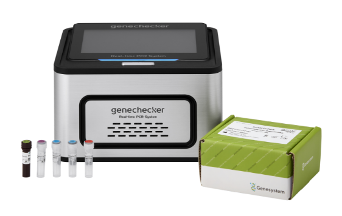

진단용 바이오센서

SERS 기판에 항체, 압타머, DNA 탐침 등을
고정화하여 특정 바이오마커에 선택적으로 결합

Surface Enhanced Raman Scattering
정밀한 실시간 분자 분석을 위한 고감도 검출 기술로,
극미량 시료에도 신뢰도 높은 성분 측정이 가능하여 차세대 기술로 주목받고 있습니다.
SERS 기판에 항체, 압타머, DNA 탐침 등을
고정화하여 특정 바이오마커에 선택적으로 결합

SERS 기판을 통해 마약, 폭발물 등의 미량 성분을
고감도로 검출하여 현장 진단에 활용

SERS 기판을 통해 식품 내 잔류 농약, 독성 물질,
식품첨가물, 병원성 미생물 대사산물 등 분석

공기, 물, 토양 등의 환경 시료를 채취해 SERS 기
판에 적용하여 중금속 이온, 환경호르몬 등 분석